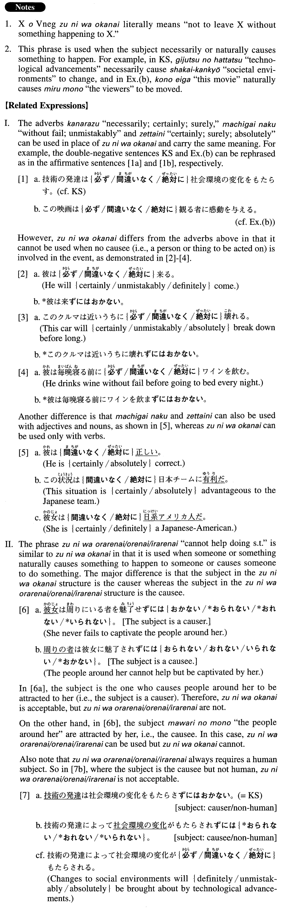

←
DoJG
→
ずにはおかない
(A. 750)
Example sentences
(ks).
技術の発達は社会環境の変化をもたらさ
ずにはおかない
。
Technological advancements are bound to bring about changes to social environments.
(a).
コンピュータの普及とインターネット利用の拡大は大きな教育の変革を促さ
ずにはおかない
。
The spread of computers and the expansion of Internet use are bound to promote big changes in education.
(b).
この映画は観る者に感動を与え
ずにはおかない
。
This movie is bound to move viewers. (literally: This movie does not leave viewers without moving them.)
(c).
この小説は我々に人間とは何かを考えさせ
ずにはおかない
。
Without fail, this novel makes us think about what it is to be human.
(d).
この事故は日本とアメリカの関係に影響を及ぼさ
ずにはおかない
だろう。
This accident will undoubtedly affect the relationship between Japan and America.
(e).
彼女は聴く者を魅了せ
ずにはおかない
音楽性とそれを表現する卓越した技術を持っている。
She has a musicality that unfailingly captivates her audiences and the superb technique to express it.
(f).
環境や用途に合わせて動物たちがつくりあげる構造物は、彼らの知恵と工夫がいたるところに見られ、我々の好奇心を惹起せ
ずにはおかない
。
Structures that animals construct according to their environment and needs exhibit in every aspect their wisdom and ideas, and are bound to arouse our curiosity.
Formation
Vnegative
ずにはおかない
Exception: する→せずにはおかない
働かさ
ずにはおかない
Someone definitely moves something
